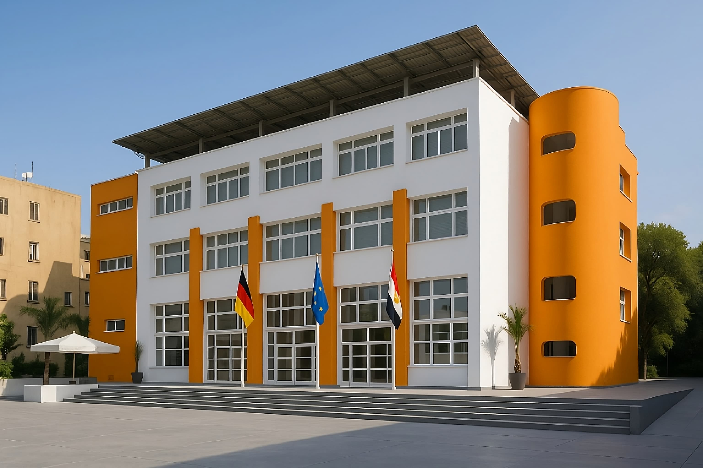
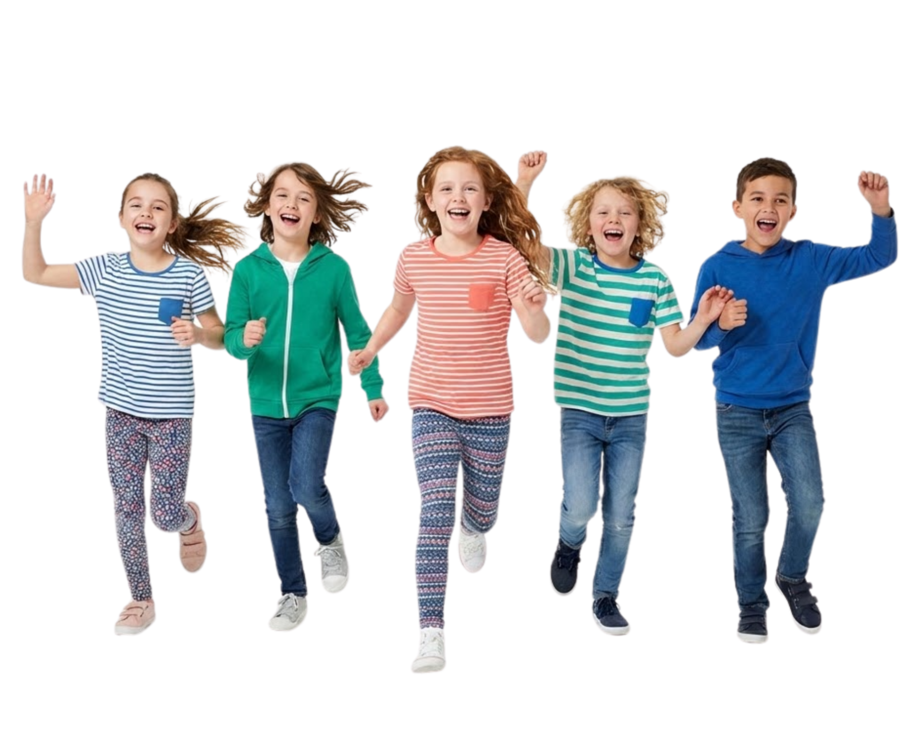

German Programme
The German curriculum
Taught to the German educational standard, leading through the Gymnasium years to the Abitur and on to universities in Germany and beyond.
Deutsche Evangelische Oberschule Kairo
A German-Egyptian school in Cairo where two educational traditions share one campus — and where students learn to move between them.
Our Campus


Our Identity
DEO Kairo is a Begegnungsschule — an encounter school. The word is doing real work: the school exists so that German and Egyptian ways of teaching and learning meet, rather than run alongside each other in separate rooms.
In practice that means German pedagogy and Egyptian school life shape the same day. Students hear more than one language before lunch, and more than one way of framing a question. Learning to hold both is not a side effect here; it is the education.
Our Vision
Academic results matter, and the school takes them seriously. But a school that only produces good grades has done half its job. The aim here is students who leave able to think for themselves, work with people unlike them, and take responsibility for something beyond their own results — in a world that will keep asking them to adapt.
Our Heritage
The Deutsche Evangelische Oberschule Kairo opened its doors in 1873, and it has been teaching in this city ever since. What began as a small German school grew, over generations, into something more particular: a school that belongs to Cairo as much as it belongs to the German educational tradition it carries.
That length of time changes how a school thinks. It can plan in decades rather than terms — about how children learn to read in two scripts, how a timetable makes room for music and sport, and how a community holds its character while the city around it keeps changing.
The Learning Journey
First words in two languages, learned through play rather than drill.
The bridge year — routines, listening and the confidence to start school.
Literacy in two scripts, taught patiently and side by side.
Academic depth across sciences, languages and the humanities.
The German university-entrance qualification, earned in two languages.
Two Educational Pathways
German Programme
Taught to the German educational standard, leading through the Gymnasium years to the Abitur and on to universities in Germany and beyond.
Egyptian Programme
The Egyptian national pathway, taught inside the same bilingual, international school environment — the same campus, the same community, the same days.